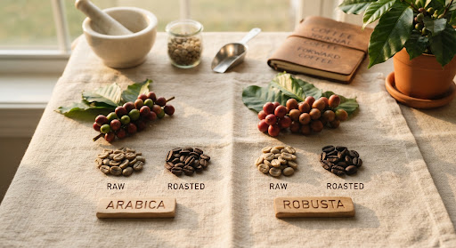

Issue #142 • Anatomy Study
Biological Dissection Matrix
Coffea Arabica vs Canephora
Arabica
Highland Typica / Bourbon
Lipids / Sugars
+60% higher
Caffeine
1.2 – 1.5%
Robusta
Lowland Canephora
Natural Crema
Dense Body
Caffeine
2.2 – 2.7%
Botanical Taxonomy
•
Today's Essential Read
What is the Difference Between Arabica and Robusta?
While Arabica commands romantic poetry for its luminous acidity and floral aromatics grown on mist-draped volcanic peaks, Robusta is the quiet backbone of body, crema density, and deep caramel sweetness. We dissect the cellular biology, sugar concentrations, and why great roasters celebrate both.
Barista Cuvée Takeaway
“Arabica brings the perfume and gentle fruit; Robusta provides the structural cocoa resonance that keeps flat whites and ice kopi susu velvety through the day.”
AS
Arga Santoso
Head Roaster • 5 min read